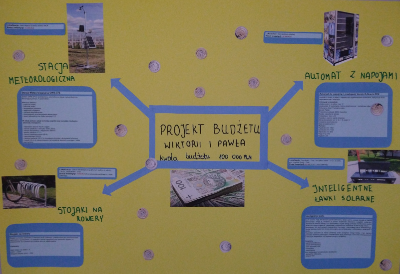

Plakat
W ramach projektu wykonaliśmy plakat z naszymi pomysłami.
Film promocyjny
Kolejnym sposobem promocji jest ten krótki film.
Projekt budżetu Wiktorii i Pawła - nauka, sport i odpoczynek z inteligentnymi technologiami.
Stacja metorologiczna
Lokalizacja: Obok wejscia od strony boiska ORLIK
Koszt inwestycji: 12 000PLN
Stacja meteorologiczna będzie cenną pomocą dydaktyczną w szkole. Zjawiska atmosferyczne są interesujące dla uczniów ponieważ, w przeciwieństwie do niektórych procesów zachodzących w naturze pogoda jest czymś namacalnym, czymś z czym ma się na co dzień do czynienia. Możliwość prowadzenia obserwacji pogody, wyciągania wniosków na bazie danych z najbiższego otoczenia, zwieksza szanse i możliwości zainteresowania uczniów procesami jakie zachodzą w atmosferze.
Automat z napojami
Lokalizacja: Szkoła, obok stołówki szkolnej
Koszt inwestycji: 20 000PLN
Pomiędzy zajęciami czy treningami będzie można sięgnąć po wodę lub sok z automatu znajdującego się w szkole. Bez konieczności wychodzenia ze szkoły do sklepu. Jest to wygoda i bezpieczeństwo.

Stojaki na rowery
Lokalizacja: Przy głównym wejściu do szkoły - 4szt., obok siłowni - 2szt.
Koszt inwestycji: 4 500PLN
Wielu uczniów z naszej szkoły na zajęcia przyjeżdża rowerem. Obecnie zamontowane stojaki są niewystarczające i są zlokalizowane tylko w jednym miejscu. Nasz projekt przewiduje dodanie stojaków w obecnej lokalizacji oraz przy siłowni obok boiska ORLIK z którego korzystamy również w czasie wakacji.
Inteligentne ławki solarne
Lokalizacja: Przy siłowni, przy placu zabaw, w parku przy Urzędzie Gminy
Koszt inwestycji: 63 500PLN (3szt. - koszt całkowity)
Inteligentne ławki będą dopełnieniem projektu. Dzięki nim uczniowie i mieszkańcy Baćkowic zyskają dostęp do darmowej energii elektrycznej przebywając na świeżym powietrzu, a tym samym będą mogli naładować swoje urządzenia mobilne. Ławki będą rozmieszczone w miejscach o odpowiedniej ekspozycji na promieniowanie słoneczne. Projekt ma również za zadanie rozwijanie świadomości ekologicznej jego użytkowników.
To jesteśmy my!
Stworzyliśmy zespół aby zaplanować ten budżet. Uczęszczamy do szkoły podstawowej w Baćkowicach. Mamy nadzieję, że nasza praca zostanie doceniona.

Wiktoria Baśkiewicz
klasa VIb

Paweł Kończak
klasa VIIa